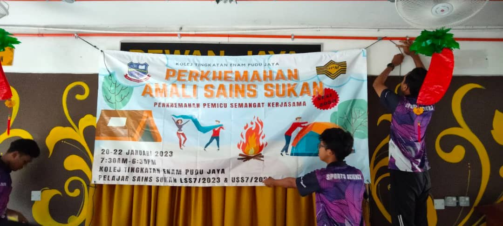

Sports Science Project
The camping practical is an outdoor educational activity assigned by the Sports Science teacher to enhance students' understanding of physical fitness, teamwork, and survival skills in a real-life environment. This practical allows students to apply theoretical knowledge learned in class, such as planning physical activities, understanding body responses to outdoor conditions, and promoting a healthy lifestyle.
Throughout the camping session, students are engaged in various physical and mental challenges, including setting up tents, group cooking, navigation using maps or compasses, as well as outdoor games and obstacle courses. These tasks help build leadership, cooperation, and decision-making skills, which are essential aspects of sports and physical education.

Multimedia Post
This group project involves the creation of a multimedia post focusing on the latest innovation by Samsung – the Galaxy Ring. The objective of this task is to explore and present how this new wearable technology functions, its features, and its impact on modern digital lifestyles.
As a team, we are responsible for researching the Galaxy Ring’s specifications, including its health tracking capabilities, smart connectivity, design, and potential integration with the Samsung ecosystem. The information gathered will be presented using engaging multimedia formats such as infographics, short videos, animations, and voice-overs to attract and inform viewers on social media platforms.
This project not only enhances our skills in content creation and digital communication, but also strengthens collaboration, creativity, and technological awareness among team members. It reflects the importance of staying updated with current tech trends and delivering information effectively through multimedia tools.

Digital Publishing
This digital publishing project titled "What’s Wrong with Pundana" is a creative group assignment designed to showcase storytelling through digital media. The project centers around a fictional character or situation named Pundana, highlighting a series of unusual events, conflicts, or social issues in a unique and engaging narrative.
Our team is responsible for developing a digital publication that combines written content with interactive and multimedia elements such as digital illustrations, audio narration, animations, and page transitions. The aim is to create an immersive reading experience that goes beyond traditional storytelling.
Through this project, we apply principles of digital layout, typography, multimedia integration, and user experience design. It also encourages critical thinking and creativity in addressing a story or theme that may reflect broader societal concerns or personal struggles.
Ultimately, "What’s Wrong with Pundana" is not just about telling a story — it is about how digital tools can transform the way stories are experienced and understood by modern audiences.